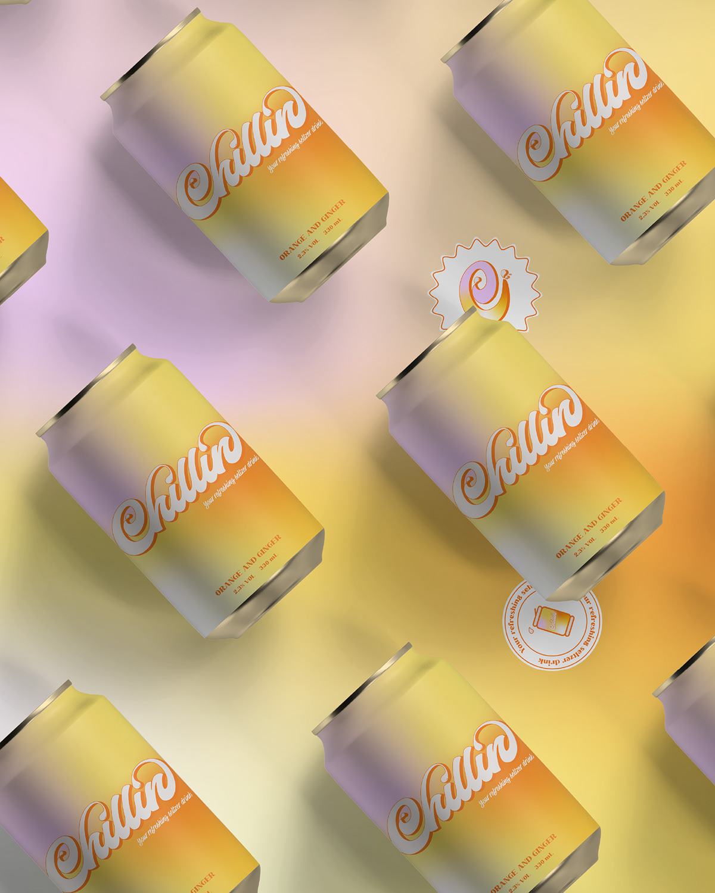
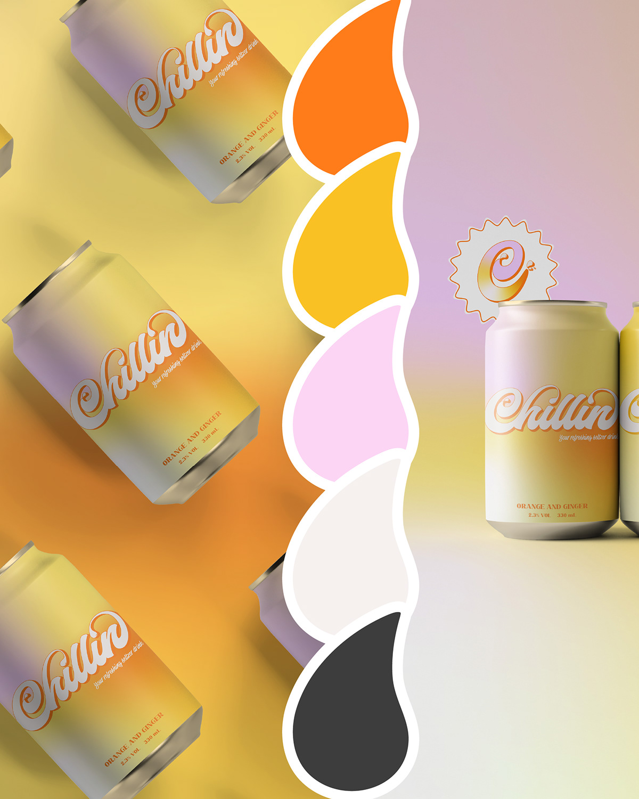
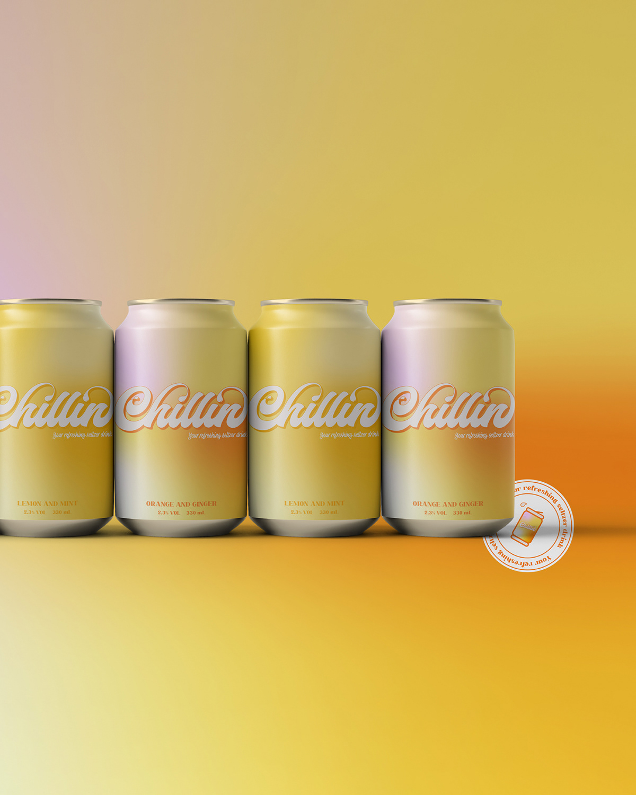
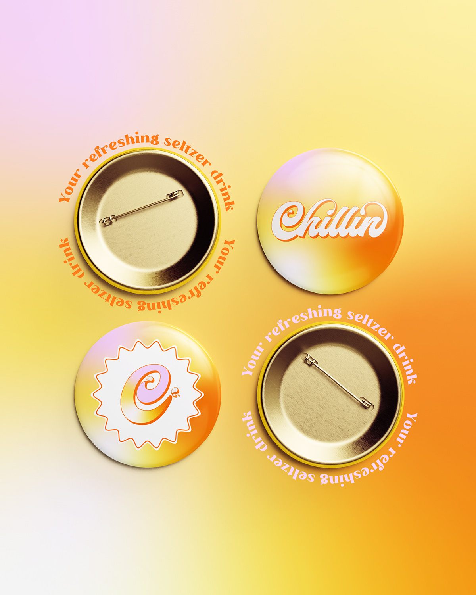
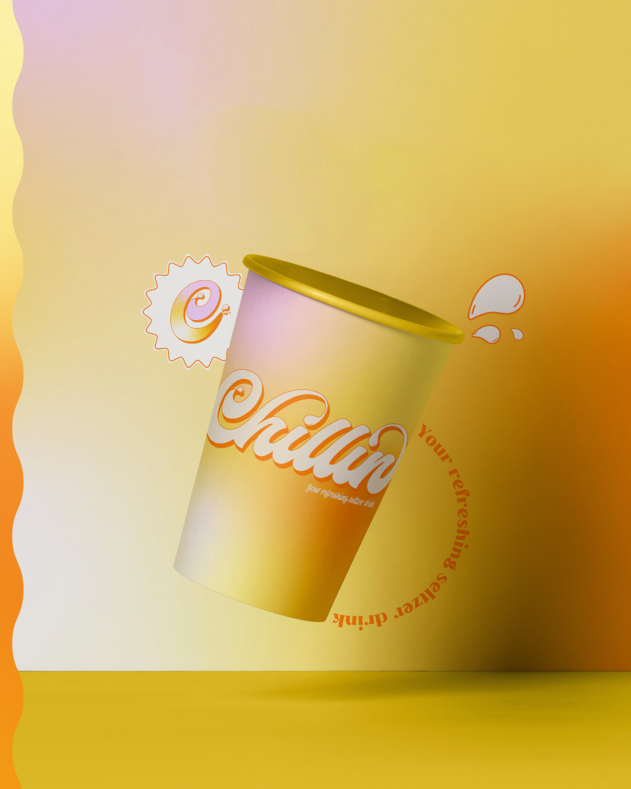
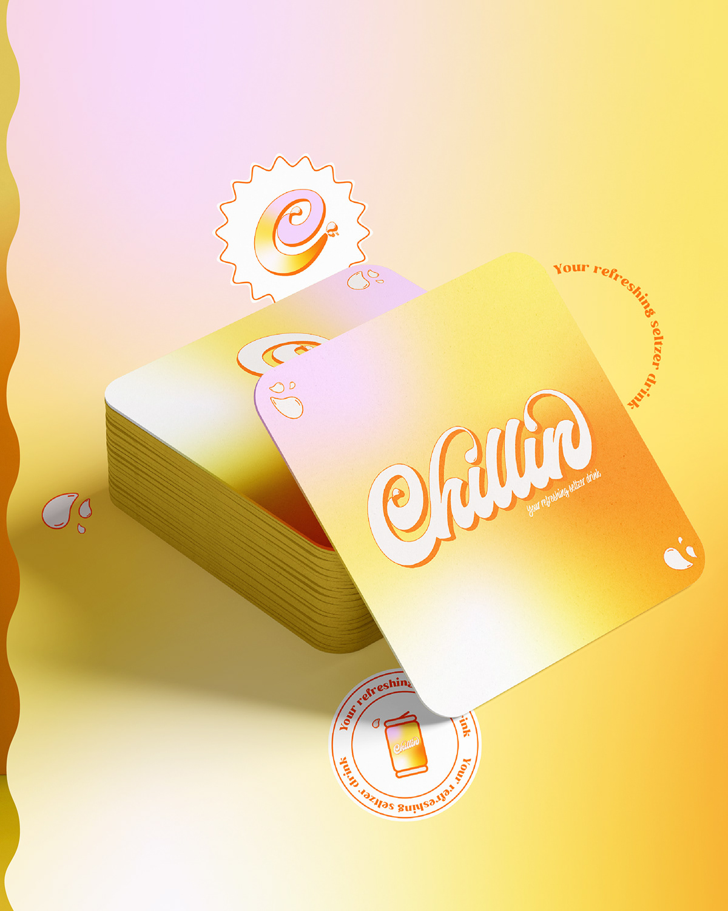
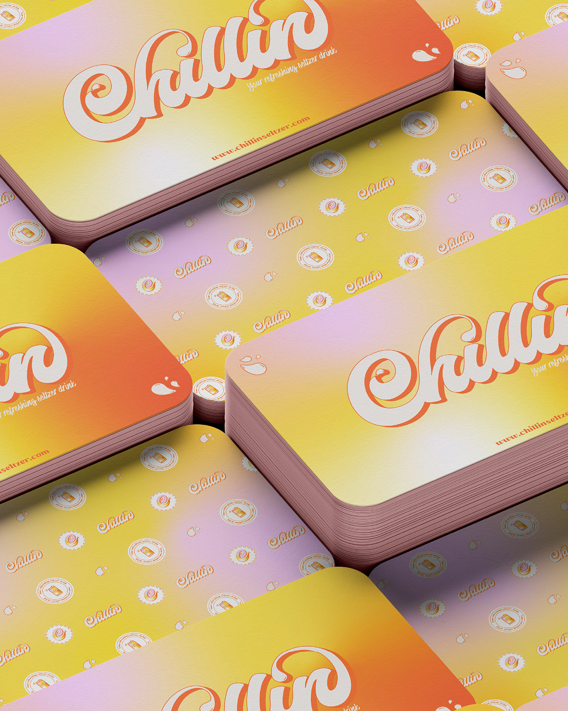
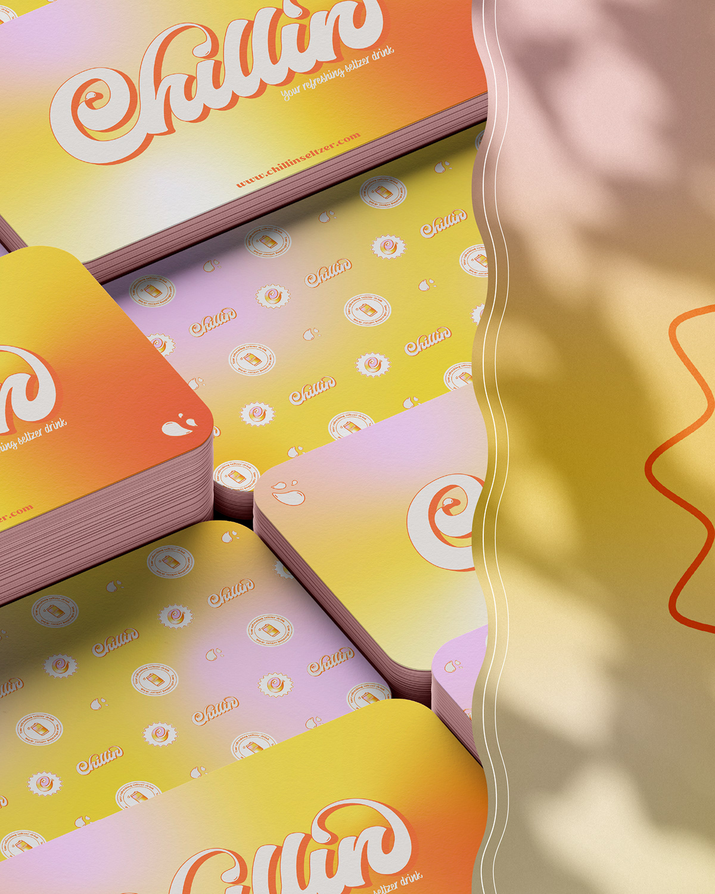
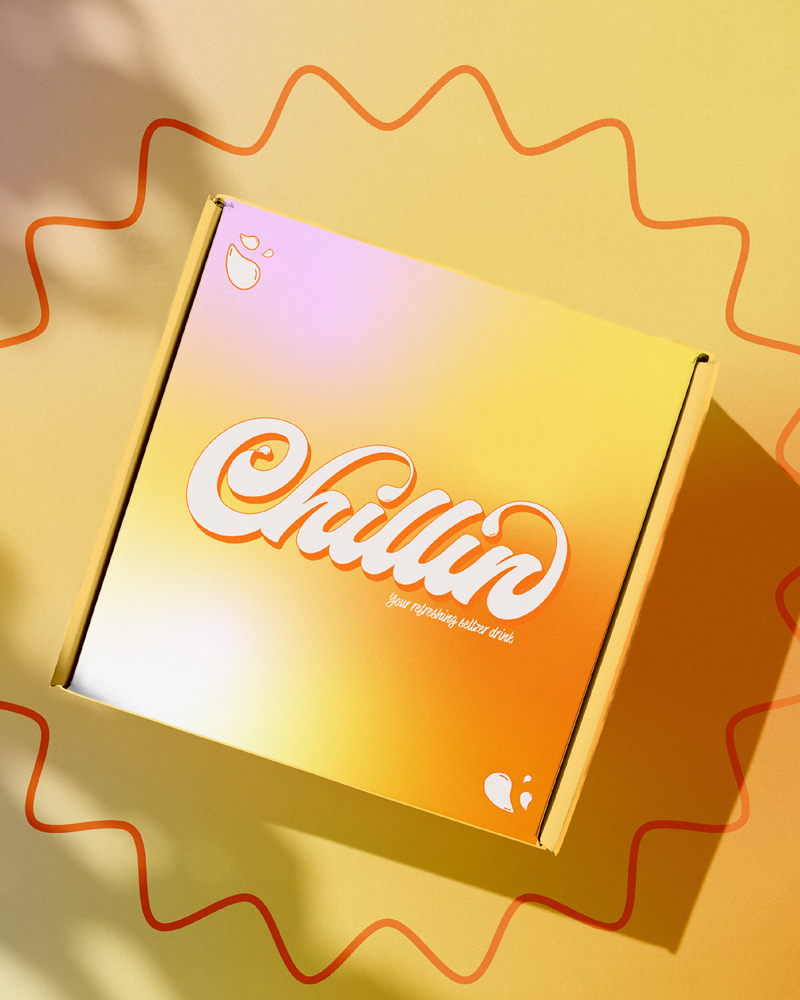

Chillin
A sparkling soda brand built on a warm gradient world — a retro script logotype, sun-faded colour and a can that tastes like late afternoon. Logo system, packaging and social visuals.








